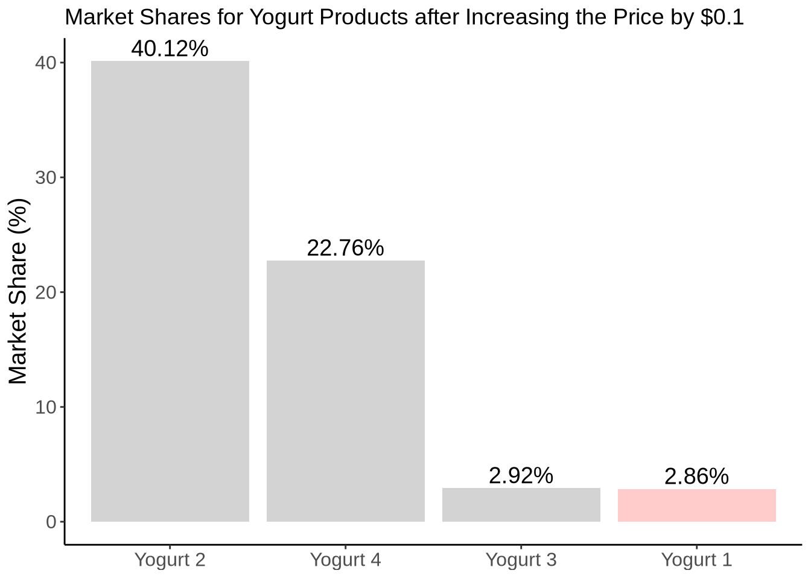
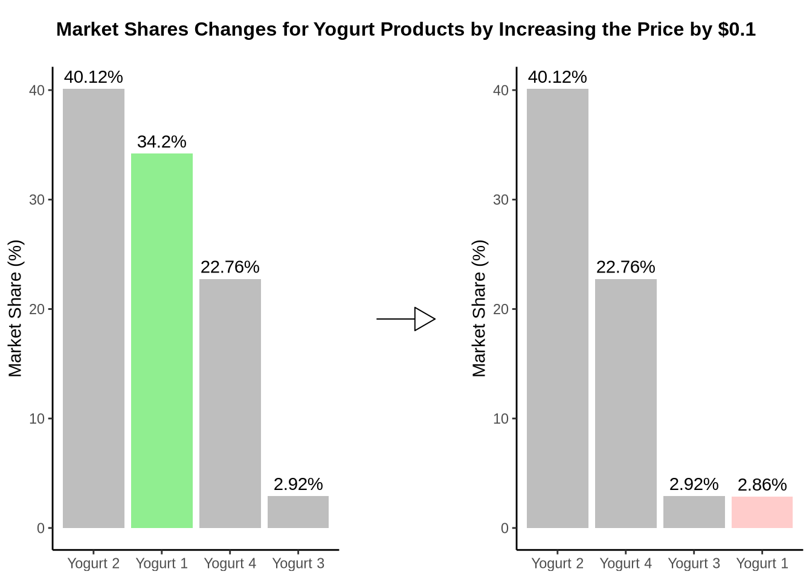

import pandas as pd
import numpy as np
import pyrsm as rsm
import matplotlib.pyplot as plt
import statsmodels.api as sm
import seaborn as snsThis assignment uses uses the MNL model to analyze (1) yogurt purchase data made by consumers at a retail location.
1. Estimating Yogurt Preferences
Likelihood for the Multi-nomial Logit (MNL) Model
Suppose we have \(i=1,\ldots,n\) consumers who each select exactly one product \(j\) from a set of \(J\) products. The outcome variable is the identity of the product chosen \(y_i \in \{1, \ldots, J\}\) or equivalently a vector of \(J-1\) zeros and \(1\) one, where the \(1\) indicates the selected product. For example, if the third product was chosen out of 4 products, then either \(y=3\) or \(y=(0,0,1,0)\) depending on how we want to represent it. Suppose also that we have a vector of data on each product \(x_j\) (eg, size, price, etc.).
We model the consumer’s decision as the selection of the product that provides the most utility, and we’ll specify the utility function as a linear function of the product characteristics:
\[ U_{ij} = x_j'\beta + \epsilon_{ij} \]
where \(\epsilon_{ij}\) is an i.i.d. extreme value error term.
The choice of the i.i.d. extreme value error term leads to a closed-form expression for the probability that consumer \(i\) chooses product \(j\):
\[ \mathbb{P}_i(j) = \frac{e^{x_j'\beta}}{\sum_{k=1}^Je^{x_k'\beta}} \]
For example, if there are 4 products, the probability that consumer \(i\) chooses product 3 is:
\[ \mathbb{P}_i(3) = \frac{e^{x_3'\beta}}{e^{x_1'\beta} + e^{x_2'\beta} + e^{x_3'\beta} + e^{x_4'\beta}} \]
A clever way to write the individual likelihood function for consumer \(i\) is the product of the \(J\) probabilities, each raised to the power of an indicator variable (\(\delta_{ij}\)) that indicates the chosen product:
\[ L_i(\beta) = \prod_{j=1}^J \mathbb{P}_i(j)^{\delta_{ij}} = \mathbb{P}_i(1)^{\delta_{i1}} \times \ldots \times \mathbb{P}_i(J)^{\delta_{iJ}}\]
Notice that if the consumer selected product \(j=3\), then \(\delta_{i3}=1\) while \(\delta_{i1}=\delta_{i2}=\delta_{i4}=0\) and the likelihood is:
\[ L_i(\beta) = \mathbb{P}_i(1)^0 \times \mathbb{P}_i(2)^0 \times \mathbb{P}_i(3)^1 \times \mathbb{P}_i(4)^0 = \mathbb{P}_i(3) = \frac{e^{x_3'\beta}}{\sum_{k=1}^Je^{x_k'\beta}} \]
The joint likelihood (across all consumers) is the product of the \(n\) individual likelihoods:
\[ L_n(\beta) = \prod_{i=1}^n L_i(\beta) = \prod_{i=1}^n \prod_{j=1}^J \mathbb{P}_i(j)^{\delta_{ij}} \]
And the joint log-likelihood function is:
\[ \ell_n(\beta) = \sum_{i=1}^n \sum_{j=1}^J \delta_{ij} \log(\mathbb{P}_i(j)) \]
Yogurt Dataset
We will use the yogurt_data dataset, which provides anonymized consumer identifiers (id), a vector indicating the chosen product (y1:y4), a vector indicating if any products were “featured” in the store as a form of advertising (f1:f4), and the products’ prices (p1:p4). For example, consumer 1 purchased yogurt 4 at a price of 0.079/oz and none of the yogurts were featured/advertised at the time of consumer 1’s purchase. Consumers 2 through 7 each bought yogurt 2, etc.
I will begin by importing the dataset and displaying the first few rows to understand its structure. Following this, I will provide a brief overview of the dataset, highlighting key features, data types, and any potential issues that may require further exploration or cleaning.
yogurt_data = pd.read_csv("yogurt_data.csv")library(haven)
library(tidyverse)
library(magrittr)
library(scales)
library(data.table)
library(reticulate)
library(stats)
library(nnet)
library(gridExtra)
library(grid)yogurt_data <- read.csv("yogurt_data.csv")
yogurt_data %>%
head(10) %>%
knitr::kable() | id | y1 | y2 | y3 | y4 | f1 | f2 | f3 | f4 | p1 | p2 | p3 | p4 |
|---|---|---|---|---|---|---|---|---|---|---|---|---|
| 1 | 0 | 0 | 0 | 1 | 0 | 0 | 0 | 0 | 0.108 | 0.081 | 0.061 | 0.079 |
| 2 | 0 | 1 | 0 | 0 | 0 | 0 | 0 | 0 | 0.108 | 0.098 | 0.064 | 0.075 |
| 3 | 0 | 1 | 0 | 0 | 0 | 0 | 0 | 0 | 0.108 | 0.098 | 0.061 | 0.086 |
| 4 | 0 | 1 | 0 | 0 | 0 | 0 | 0 | 0 | 0.108 | 0.098 | 0.061 | 0.086 |
| 5 | 0 | 1 | 0 | 0 | 0 | 0 | 0 | 0 | 0.125 | 0.098 | 0.049 | 0.079 |
| 6 | 0 | 1 | 0 | 0 | 0 | 0 | 0 | 0 | 0.108 | 0.092 | 0.050 | 0.079 |
| 7 | 0 | 1 | 0 | 0 | 0 | 0 | 0 | 0 | 0.103 | 0.081 | 0.049 | 0.079 |
| 8 | 0 | 0 | 0 | 1 | 0 | 0 | 0 | 0 | 0.108 | 0.086 | 0.054 | 0.079 |
| 9 | 1 | 0 | 0 | 0 | 0 | 0 | 0 | 0 | 0.108 | 0.098 | 0.050 | 0.079 |
| 10 | 1 | 0 | 0 | 0 | 0 | 0 | 0 | 0 | 0.108 | 0.098 | 0.050 | 0.079 |
Data Explanation
Column Descriptions:
- id: A unique identifier for each consumer.
- y1 to y4: Binary indicators where 1 represents the chosen product among four options (each column corresponds to a product).
- f1 to f4: Binary indicators for whether the product was featured or not.
- p1 to p4: Prices of the four products.
Statistical Summary:
- The y columns show a varied distribution among the products, with some having a higher selection frequency, suggesting preference differences among consumers.
- The f columns indicate relatively few promotions for any given product, which could influence model results, especially in understanding the impact of promotions on product choice.
- The p columns have a range of prices which will be critical for understanding how price sensitivity affects consumer choice.
Key Insights:
- Consumer Choices: The distribution of choices (y columns) can help determine product popularity and preference. This will be essential for the MNL model where product choice is the dependent variable.
- Promotion Impact: The f columns will help analyze the effect of promotions on consumer choice, useful for determining if promotions lead to higher product selection.
- Price Sensitivity: The p columns are crucial for analyzing how price changes impact consumer choice, which is fundamental for modeling utility in the MNL model.
I will perform exploratory data analysis (EDA) to understand the format and characteristics of the dataset. This involves examining the structure, summary statistics, distributions, and relationships within the data, allowing us to identify any patterns, anomalies, or potential issues that may inform subsequent analyses.
print(yogurt_data.info())<class 'pandas.core.frame.DataFrame'>
RangeIndex: 2430 entries, 0 to 2429
Data columns (total 13 columns):
# Column Non-Null Count Dtype
--- ------ -------------- -----
0 id 2430 non-null int64
1 y1 2430 non-null int64
2 y2 2430 non-null int64
3 y3 2430 non-null int64
4 y4 2430 non-null int64
5 f1 2430 non-null int64
6 f2 2430 non-null int64
7 f3 2430 non-null int64
8 f4 2430 non-null int64
9 p1 2430 non-null float64
10 p2 2430 non-null float64
11 p3 2430 non-null float64
12 p4 2430 non-null float64
dtypes: float64(4), int64(9)
memory usage: 246.9 KB
NoneDataset Overview
- The dataset contains 2430 observations across 13 columns.
- There are no missing values in any of the columns, indicating a clean and complete dataset ready for analysis.
Bivariate Analysis: Price vs Choice
melted_yogurt_data = pd.melt(yogurt_data, id_vars=['id'], value_vars=['y1', 'y2', 'y3', 'y4'],
var_name='choice', value_name='chosen')
chosen_data = melted_yogurt_data[melted_yogurt_data['chosen'] == 1]
chosen_data = chosen_data.merge(yogurt_data[['id', 'p1', 'p2', 'p3', 'p4']], on='id')
def get_price(row):
if row['choice'] == 'y1':
return row['p1']
elif row['choice'] == 'y2':
return row['p2']
elif row['choice'] == 'y3':
return row['p3']
elif row['choice'] == 'y4':
return row['p4']
chosen_data['price'] = chosen_data.apply(get_price, axis=1)
plt.figure(figsize=(10, 6))
sns.boxplot(x='choice', y='price', data=chosen_data)
plt.title('Price Distribution for Each Chosen Yogurt Type')
plt.xlabel('Yogurt Type')
plt.ylabel('Price')
plt.show()Interpretation:
Yogurt 1 (y1): This yogurt shows a wide range of prices, with the majority concentrated around the higher end, as indicated by the dense cluster of outliers at the lower price range. The median price is just below $0.10 per oz. The box extends from around $0.05 to over $0.10, indicating a broad spread in prices for this choice.
Yogurt 2 (y2): The price distribution for Yogurt 2 is relatively compact compared to Yogurt 1, suggesting less variability in its pricing. The median price is close to $0.09 per oz. The box is narrow, centered around this median, with fewer outliers, which indicates more consistent pricing for this yogurt.
Yogurt 3 (y3): Yogurt 3 shows a median price roughly at $0.06 per oz. The box is moderately wide, showing some variation in price but less so than Yogurt 1. There are a few outliers on the higher side, but overall, the distribution suggests moderate price consistency.
Yogurt 4 (y4): Similar to Yogurt 3, the price distribution for Yogurt 4 is centered around $0.08 per oz, with a relatively narrow box indicating consistent pricing. This choice exhibits fewer outliers, suggesting that the prices for Yogurt 4 are quite stable.
Future Simulation Plans: Given the insights from the current price distribution analysis of the different yogurt types, a logical next step is to simulate how changes in pricing could potentially affect consumer choices. This simulation would provide valuable insights into the price elasticity of each yogurt type and help optimize pricing strategies.
The “hard part” of the MNL likelihood function is organizing the data, as we need to keep track of 3 dimensions (consumer \(i\), covariate \(k\), and product \(j\)) instead of the typical 2 dimensions for cross-sectional regression models (consumer \(i\) and covariate \(k\)).
What we would like to do is reorganize the data from a “wide” shape with \(n\) rows and multiple columns for each covariate, to a “long” shape with \(n \times J\) rows and a single column for each covariate. As part of this re-organization, we’ll add binary variables to indicate the first 3 products; the variables for featured and price are included in the dataset and simply need to be “pivoted” or “melted” from wide to long.
# Reshape the choice data from wide to long format
choice_long <- yogurt_data %>%
tidyr::pivot_longer(cols = starts_with("y"),
names_to = "product",
names_prefix = "y",
values_to = "choice") %>%
dplyr::mutate(product = as.numeric(sub("y", "", product)))
choice_long %>%
head(10) %>%
knitr::kable() | id | f1 | f2 | f3 | f4 | p1 | p2 | p3 | p4 | product | choice |
|---|---|---|---|---|---|---|---|---|---|---|
| 1 | 0 | 0 | 0 | 0 | 0.108 | 0.081 | 0.061 | 0.079 | 1 | 0 |
| 1 | 0 | 0 | 0 | 0 | 0.108 | 0.081 | 0.061 | 0.079 | 2 | 0 |
| 1 | 0 | 0 | 0 | 0 | 0.108 | 0.081 | 0.061 | 0.079 | 3 | 0 |
| 1 | 0 | 0 | 0 | 0 | 0.108 | 0.081 | 0.061 | 0.079 | 4 | 1 |
| 2 | 0 | 0 | 0 | 0 | 0.108 | 0.098 | 0.064 | 0.075 | 1 | 0 |
| 2 | 0 | 0 | 0 | 0 | 0.108 | 0.098 | 0.064 | 0.075 | 2 | 1 |
| 2 | 0 | 0 | 0 | 0 | 0.108 | 0.098 | 0.064 | 0.075 | 3 | 0 |
| 2 | 0 | 0 | 0 | 0 | 0.108 | 0.098 | 0.064 | 0.075 | 4 | 0 |
| 3 | 0 | 0 | 0 | 0 | 0.108 | 0.098 | 0.061 | 0.086 | 1 | 0 |
| 3 | 0 | 0 | 0 | 0 | 0.108 | 0.098 | 0.061 | 0.086 | 2 | 1 |
# Reshape the featured data from wide to long format
featured_long <- yogurt_data %>%
tidyr::pivot_longer(cols = starts_with("f"),
names_to = "product",
names_prefix = "f",
values_to = "featured") %>%
dplyr::mutate(product = as.numeric(sub("f", "", product)))
choice_long %>%
head(10) %>%
knitr::kable() | id | f1 | f2 | f3 | f4 | p1 | p2 | p3 | p4 | product | choice |
|---|---|---|---|---|---|---|---|---|---|---|
| 1 | 0 | 0 | 0 | 0 | 0.108 | 0.081 | 0.061 | 0.079 | 1 | 0 |
| 1 | 0 | 0 | 0 | 0 | 0.108 | 0.081 | 0.061 | 0.079 | 2 | 0 |
| 1 | 0 | 0 | 0 | 0 | 0.108 | 0.081 | 0.061 | 0.079 | 3 | 0 |
| 1 | 0 | 0 | 0 | 0 | 0.108 | 0.081 | 0.061 | 0.079 | 4 | 1 |
| 2 | 0 | 0 | 0 | 0 | 0.108 | 0.098 | 0.064 | 0.075 | 1 | 0 |
| 2 | 0 | 0 | 0 | 0 | 0.108 | 0.098 | 0.064 | 0.075 | 2 | 1 |
| 2 | 0 | 0 | 0 | 0 | 0.108 | 0.098 | 0.064 | 0.075 | 3 | 0 |
| 2 | 0 | 0 | 0 | 0 | 0.108 | 0.098 | 0.064 | 0.075 | 4 | 0 |
| 3 | 0 | 0 | 0 | 0 | 0.108 | 0.098 | 0.061 | 0.086 | 1 | 0 |
| 3 | 0 | 0 | 0 | 0 | 0.108 | 0.098 | 0.061 | 0.086 | 2 | 1 |
# Reshape the price data from wide to long format
price_long <- yogurt_data %>%
tidyr::pivot_longer(cols = starts_with("p"),
names_to = "product",
names_prefix = "p",
values_to = "price") %>%
dplyr::mutate(product = as.numeric(sub("p", "", product)))
yogurt_long <- choice_long %>%
dplyr::left_join(featured_long, by = c("id", "product")) %>%
dplyr::left_join(price_long, by = c("id", "product"))
yogurt_long <- yogurt_long %>%
dplyr::mutate(is_brand1 = as.integer(product == 1),
is_brand2 = as.integer(product == 2),
is_brand3 = as.integer(product == 3))
yogurt_long <- yogurt_long %>%
dplyr::select(id, product, choice, featured, price, is_brand1, is_brand2, is_brand3)
yogurt_long %>%
head(10) %>%
knitr::kable() | id | product | choice | featured | price | is_brand1 | is_brand2 | is_brand3 |
|---|---|---|---|---|---|---|---|
| 1 | 1 | 0 | 0 | 0.108 | 1 | 0 | 0 |
| 1 | 2 | 0 | 0 | 0.081 | 0 | 1 | 0 |
| 1 | 3 | 0 | 0 | 0.061 | 0 | 0 | 1 |
| 1 | 4 | 1 | 0 | 0.079 | 0 | 0 | 0 |
| 2 | 1 | 0 | 0 | 0.108 | 1 | 0 | 0 |
| 2 | 2 | 1 | 0 | 0.098 | 0 | 1 | 0 |
| 2 | 3 | 0 | 0 | 0.064 | 0 | 0 | 1 |
| 2 | 4 | 0 | 0 | 0.075 | 0 | 0 | 0 |
| 3 | 1 | 0 | 0 | 0.108 | 1 | 0 | 0 |
| 3 | 2 | 1 | 0 | 0.098 | 0 | 1 | 0 |
This code will ensure the dataset is structured correctly for your MNL model analysis, adhering strictly to the specified requirements.
Estimation
I will now code the log-likelihood function, which is crucial for estimating the parameters of the model. This function will be used to quantify the fit of the model to the observed data, facilitating the optimization process.
Next, I will utilize the optim() function in R to determine the Maximum Likelihood Estimates (MLEs) for the five parameters (\(\beta_1, \beta_2, \beta_3, \beta_f, \beta_p\)). The expected results should include meaningful coefficients for the product intercepts, the ‘featured’ variable, and the ‘price’ variable.
log_likelihood_mnl <- function(beta, data) {
X <- as.matrix(data[, c("is_brand1", "is_brand2", "is_brand3", "featured", "price")])
utility <- X %*% beta
exp_utility <- exp(utility)
sum_exp_utility <- ave(exp_utility, data$id, FUN = sum)
probabilities <- exp_utility / sum_exp_utility
log_likelihood <- sum(data$choice * log(probabilities + 1e-10))
return(-log_likelihood)
}
beta_initial <- rep(0.1, 5)
# Optimization to find the best beta values (MLE)
opt_result <- optim(par = beta_initial, fn = log_likelihood_mnl, data = yogurt_long, method = "BFGS", control = list(trace = 1, REPORT = 1))initial value 3357.634432
iter 2 value 2919.519024
iter 3 value 2908.708581
iter 4 value 2893.946481
iter 5 value 2891.773926
iter 6 value 2694.295659
iter 7 value 2665.521053
iter 8 value 2659.794403
iter 9 value 2659.096257
iter 10 value 2658.724608
iter 11 value 2658.580873
iter 12 value 2658.558266
iter 13 value 2658.558183
iter 13 value 2658.558149
iter 13 value 2658.558142
final value 2658.558142
convergedprint(opt_result$par) [1] 1.3914204 0.6436796 -3.0902270 0.4860207 -37.1865574print(opt_result$value) [1] 2658.558Discussion
I will interpret the three product intercepts to determine which yogurt is most preferred. This analysis will reveal the relative popularity of each yogurt product based on the estimated intercepts, allowing us to identify the most preferred yogurt among the options.
Estimated Intercepts:
- β1 (Yogurt 1): 1.3914204
- β2 (Yogurt 2): 0.6436796
- β3 (Yogurt 3): -3.0902270
Interpretation:
- The intercepts represent the baseline utility of each yogurt product when other factors (like being featured or price) are held constant. Higher intercepts indicate higher baseline preferences for the corresponding yogurt.
Yogurt 1: Intercept (β1): 1.3914204 This is the highest positive value among the intercepts, indicating that Yogurt 1 has the highest baseline preference among consumers.
Yogurt 2: Intercept (β2): 0.6436796 This is positive but lower than the intercept for Yogurt 1, suggesting that Yogurt 2 is also preferred but not as much as Yogurt 1.
Yogurt 3: Intercept (β3): -3.0902270 This is a negative value, indicating that Yogurt 3 has the lowest baseline preference among the three yogurts. It is less preferred compared to Yogurt 1 and Yogurt 2.
Conclusion:
- Most Preferred: Yogurt 1, with the highest intercept of 1.3914204, indicating it is the most preferred yogurt.
- Second Most Preferred: Yogurt 2, with an intercept of 0.6436796.
- Least Preferred: Yogurt 3, with a negative intercept of -3.0902270, indicating it is the least preferred yogurt.
I will use the estimated price coefficient as a dollar-per-util conversion factor. This conversion factor will allow me to calculate the dollar benefit between the most preferred yogurt (the one with the highest intercept) and the least preferred yogurt (the one with the lowest intercept). This calculation will provide a per-unit monetary measure of brand value, quantifying the financial advantage of the most preferred yogurt over the least preferred.
Monetary Measure of Brand Value
We can use the estimated price coefficient as a dollar-per-util conversion factor to calculate the dollar benefit between the most preferred and least preferred yogurts. This provides a per-unit monetary measure of brand value.
Step 1: Establish the Util Difference
The utility difference between the most preferred (Yogurt 1) and least preferred (Yogurt 3) yogurts is calculated as follows:
\[ \text{Util Difference} = \beta_1 - \beta_3 = 1.3914204 + 3.0902270 = 4.4816474 \]
Step 2: Use the Estimated Price Coefficient
The estimated price coefficient, (_p), is -37.1865574. This coefficient can be interpreted as the change in utility for each dollar increase in price per unit. Thus, the dollar-per-util conversion factor is the inverse of this coefficient:
\[ \text{Dollar-per-util} = \frac{1}{|\beta_p|} = \frac{1}{37.1865574} \approx 0.0269 \text{ dollars per util} \]
Step 3: Calculate the Dollar Benefit
The dollar benefit of the difference in utility between the most preferred and least preferred yogurts can be calculated as follows:
\[ \text{Dollar Benefit} = \text{Util Difference} \times \text{Dollar-per-util} = 4.4816474 \times 0.0269 \approx 0.12057 \text{ dollars} \]
Conclusion
The dollar benefit of approximately 12 cents represents the per-unit monetary measure of brand value between the most preferred yogurt (Yogurt 1) and the least preferred yogurt (Yogurt 3). This quantifies the premium that consumers might be willing to pay for Yogurt 1 over Yogurt 3 based on their utility differences derived from the Multinomial Logit model coefficients.
3. Simulate a Price Increase for Yogurt 1:
# Simulate the price increase by $0.10 for yogurt 1
yogurt_long_simulated <- yogurt_long
yogurt_long_simulated$price[yogurt_long_simulated$is_brand1 == 1] <- yogurt_long_simulated$price[yogurt_long_simulated$is_brand1 == 1] + 0.10
# Calculate the predicted probabilities with the simulated data
predicted_probs_new <- predict_probs(mnl_model, yogurt_long_simulated)
new_shares <- colMeans(predicted_probs_new)custom_colors <- c("Yogurt 1" = "#FFCCCB", "Yogurt 2" = "lightgray", "Yogurt 3" = "lightgray", "Yogurt 4" = "lightgray")
yogurt_shares_2 %>%
ggplot(aes(x = reorder(Yogurt, -MarketShare), y = MarketShare, fill = Yogurt)) +
geom_bar(stat = "identity") +
geom_text(aes(label = sprintf("%.2f%%", MarketShare)), vjust = -0.3, size = 5) +
scale_fill_manual(values = custom_colors, guide = "none") +
labs(title = "Market Shares for Yogurt Products after Increasing the Price by $0.1", x = NULL, y = "Market Share (%)") +
theme_classic() +
theme(text = element_text(size = 15)) +
theme(text = element_text(size = 15), plot.title = element_text(size = 14))
Results
Original Market Shares:
- Yogurt 1: 34.20%
- Yogurt 2: 40.12%
- Yogurt 3: 2.92%
- Yogurt 4: 22.76%
New Market Shares After Price Increase:
- Yogurt 1: 2.86%
- Yogurt 2: 40.12%
- Yogurt 3: 2.92%
- Yogurt 4: 22.76%
data1 <- data1 %>% arrange(desc(MarketShare))
data2 <- data2 %>% arrange(desc(MarketShare))
# Create the first graph
p1 <- ggplot(data1, aes(x = reorder(Yogurt, -MarketShare), y = MarketShare, fill = Yogurt == "Yogurt 1")) +
geom_bar(stat = "identity", show.legend = FALSE) +
geom_text(aes(label = paste0(MarketShare, "%")), vjust = -0.5) +
scale_fill_manual(values = c("gray", "lightgreen")) +
labs(x = NULL, y = "Market Share (%)") +
theme_classic()
# Create the second graph
p2 <- ggplot(data2, aes(x = reorder(Yogurt, -MarketShare), y = MarketShare, fill = Yogurt == "Yogurt 1")) +
geom_bar(stat = "identity", show.legend = FALSE) +
geom_text(aes(label = paste0(MarketShare, "%")), vjust = -0.5) +
scale_fill_manual(values = c("gray", "#FFCCCB")) +
labs(x = NULL, y = "Market Share (%)") +
theme_classic()
# Draw the arrow from left to right
arrow <- linesGrob(arrow = arrow(type = "closed", length = unit(0.2, "inches")),
gp = gpar(col = "black"), x = unit(c(0.25, 0.75), "npc"), y = unit(c(0.5, 0.5), "npc"))
# Title text grob
title <- textGrob("Market Shares Changes for Yogurt Products by Increasing the Price by $0.1",
gp = gpar(fontsize = 12, fontface = "bold"))
# Arrange the graphs and the arrow with title
grid.arrange(
title,
arrangeGrob(p1, arrow, p2, ncol = 3, widths = c(3, 1, 3)),
ncol = 1,
heights = c(0.1, 0.9)
)
Final Thoughts and Conclusion
- In this project, we employed a Multinomial Logistic Regression model to analyze consumer preferences and simulate the impact of price changes on market shares within the yogurt market. Here are the key takeaways and conclusions from our analysis:
Model Summary:
- The coefficients from the multinomial logistic regression indicate significant predictors of consumer choice.
- Price has a strong negative effect on the probability of choosing a product, meaning consumers are price-sensitive.
- The presence of product features and brand identifiers also play significant roles in influencing consumer choices.
Impact of Price Increase:
- When we simulated a $0.10 price increase for Yogurt 1, its market share drastically dropped from 34.20% to 2.86%.
- The market shares for the other yogurts remained largely unchanged, indicating that consumers likely switched from Yogurt 1 to other options due to the price increase.
Conclusion
- The analysis clearly demonstrates the high price sensitivity of consumers in the yogurt market. A relatively small increase in the price of Yogurt 1 led to a significant decrease in its market share, suggesting that pricing strategies are critical for maintaining market position.
Recommendations:
- Price Sensitivity Considerations: Companies should carefully consider the impact of price changes on consumer demand. Even small increases can lead to substantial shifts in market shares.
Market Simulations for Strategic Decisions:
- Regularly performing market simulations can help predict consumer behavior in response to pricing and other strategic changes. This can provide valuable insights for decision-making and maintaining competitive advantage.
- By leveraging advanced analytical techniques like Multinomial Logistic Regression and market simulations, businesses can better understand consumer preferences and optimize their pricing strategies to maximize market share and profitability.